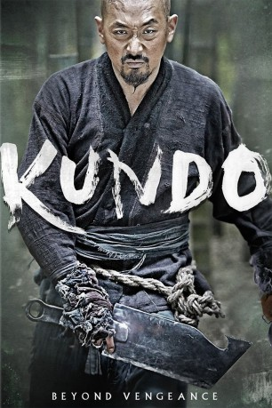

#2656 Kundo - Pakt der Gesetzlosen
 
 IMDB-Wertung: 6.8 / 10
IMDB-Wertung: 6.8 / 10  Metascore: 56
Metascore: 56 
Korea, 1859: Das Land wird von gierigen Politikern regiert, die einfache Bevölkerung hat kaum etwas zu essen. Aus der Not heraus lässt sich der bitterarme Schlachter Dolmuchi auf einen schmutzigen Deal mit dem reichen und skrupellosen Adligen Joo-yon ein: Er soll eine junge Frau ermorden, die Joo-yons Aufstieg gefährden könnte. Als das Attentat misslingt, ist Joo-yons Rache unerbittlich. Seine Soldaten bringen Dolmuchis Familie um, er selbst jedoch wird in letzter Sekunde von Kriegern des Kundo-Klans gerettet. Die ehrbaren Gesetzlosen berauben die Reichen und teilen die Beute mit den Notdürftigen. Nach zwei Jahren harten Kampftrainings im bergigen Versteck des Kundo-Klans stellt sich Dolmuchi dem immer mächtiger werdenden Joo-yon …
Jahr: 2014
Dauer: 137 Minuten
FSK: 16
Land: Süd-Korea Studio: Splendid FilmTonspuren:
Untertitel: Deutsch,
Auflösung: 1080p (1920x816) Größe: 9472 MB
Genre: Action, Drama
Regisseur: Jong-bin Yoon
Drehbuch: Cheol-Hong Jeon, Jong-bin Yoon
Soundtrack: Yeong-wook Jo
Darsteller:
 Jung-woo Ha als Dolmuchi
Jung-woo Ha als Dolmuchi- Dong-won Kang als Jo-yoon
- Jin-woong Jo als Lee Tae-ki
- Ji-hye Yun als Ma-hyang
- Ye-ri Han als Gok-ji
- Hae-suk Kim als Dolmuchi's mother
- Sung-min Lee als Dae-ho
- Dong-seok Ma als Chun-bo
- Man-sik Jeong als Butler Yang
- Seong-gyoon Kim als Jang
- Jae-young Kim als Geum-san
 Kyeong-yeong Lee als Ddaeng-choo
Kyeong-yeong Lee als Ddaeng-choo- Seon-Mook Cho als
Datei: X:\HD-Eastern-Classic(A-M)\Kundo - Pakt der Gesetzlosen (2014, FSK16, 1920x816).mkv seit 30.11.2015
Festplatte: HD Eastern+Western
 Es gibt insgesamt 63 Filme in der Gruppe 'HD-Eastern-Classic(A-M)'
Es gibt insgesamt 63 Filme in der Gruppe 'HD-Eastern-Classic(A-M)'